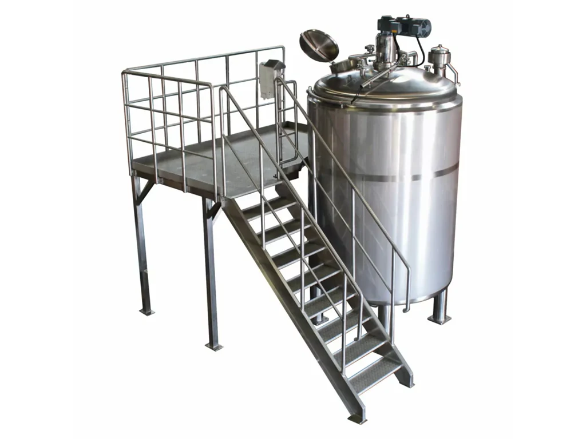
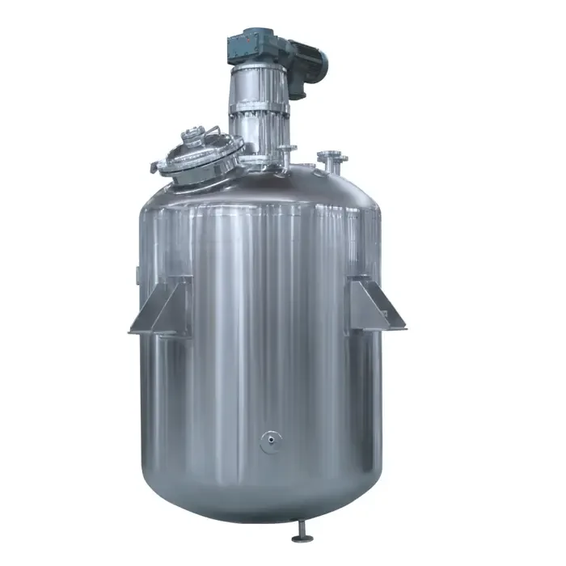
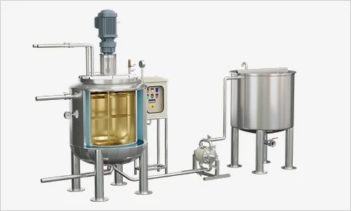
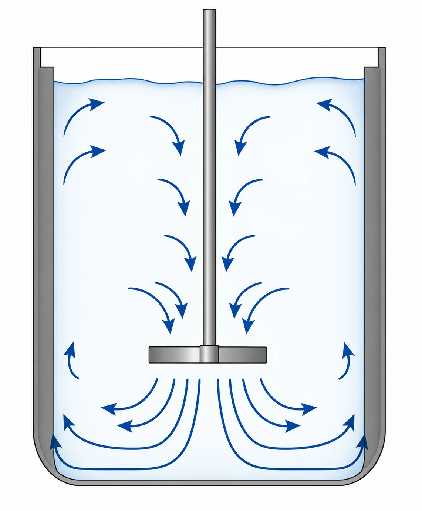
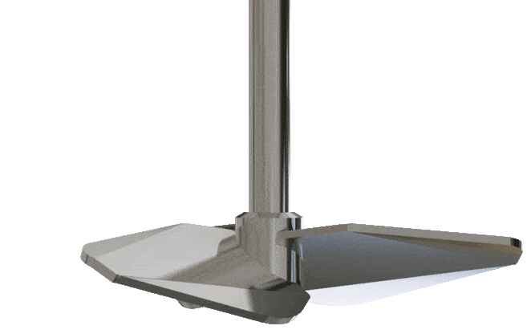
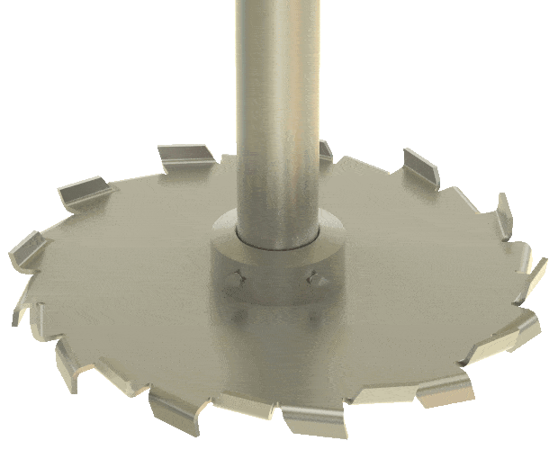
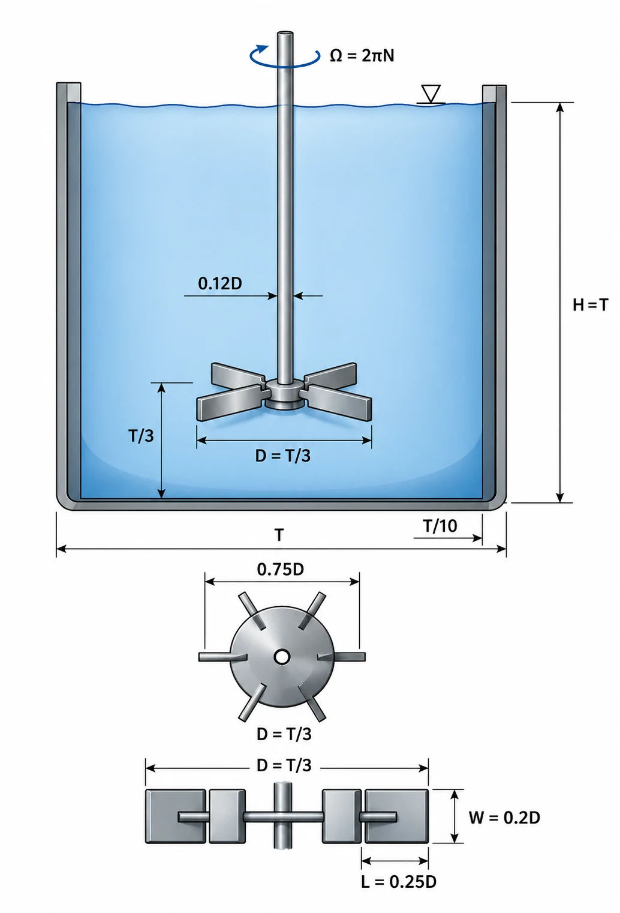
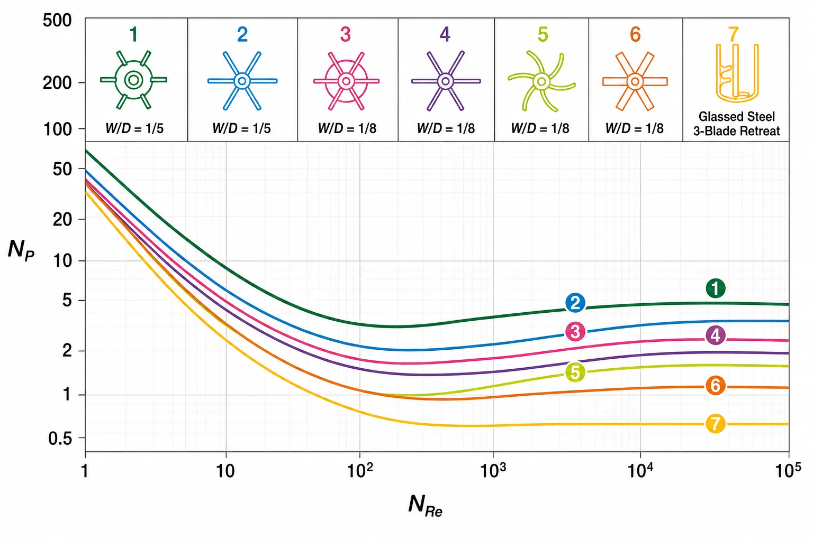
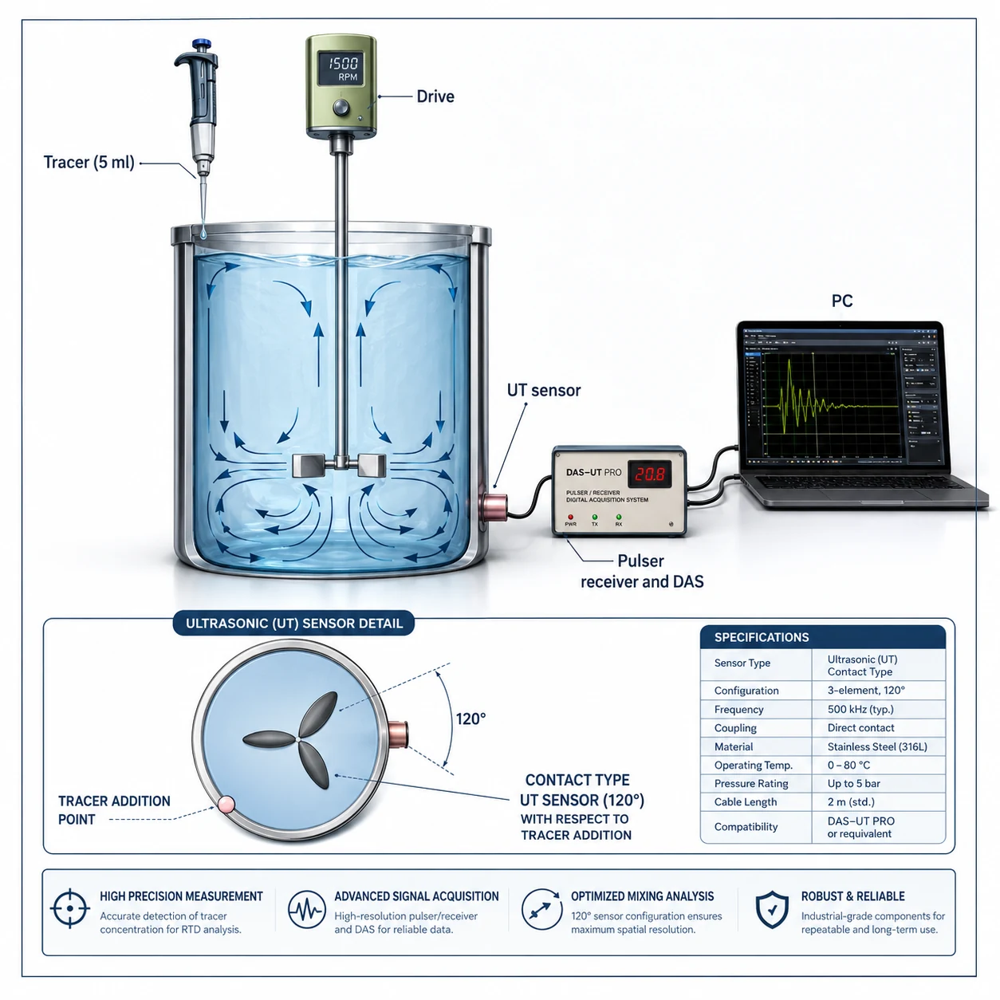
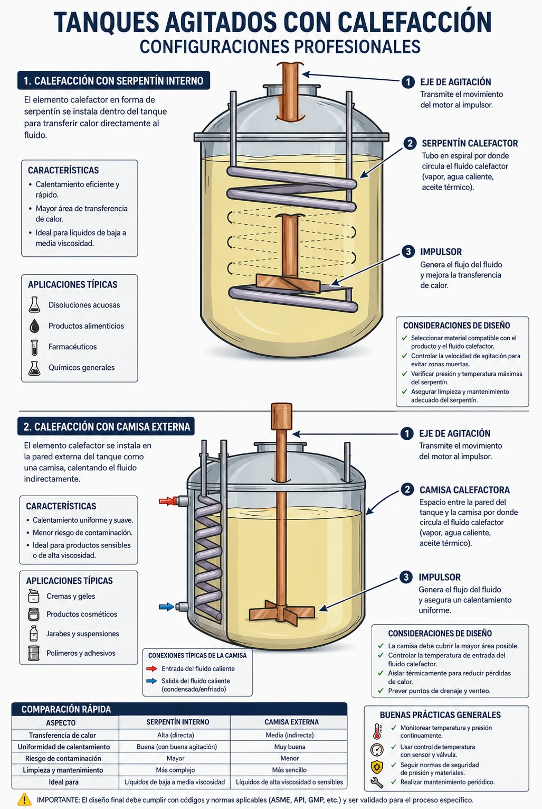

IQYA-2031 · Sesión 09
Agitación
Impulsores, números adimensionales, escalamiento y diseño para la planta de pectina
Agenda
- 01Objetivos de la agitaciónPor qué agitar, cuándo vale la pena y cuánto cuesta
- 02Tipos de impulsoresFlujo axial, radial y especializados — selección según objetivo
- 03Geometría estándar y patrones de flujoProporciones, baffles e interpretación de trayectorias
- 04Número de Reynolds y regímenesLaminar, transición, turbulento — cuál aplica al proyecto
- 05Número de potencia y curvas$N_p$ por tipo, régimen y efecto de baffles
- 06Tiempo de mezcladoDefinición, correlación y medición experimental
- 07Suspensión de sólidos y dispersión gas-líquidoCriterio Zwietering, $k_La$ y control de inundación
- 08EscalamientoCuatro criterios, compromiso práctico y ejemplo 1:10
- 09Transferencia de calor en tanques agitadosCorrelación Nu, configuraciones y valores típicos de $h$
- 10Instrumentación, control y aplicación al proyectoParámetros de proceso, mecánicos y diseño del reactor de extracción
En esta sesión conocerá las herramientas para dimensionar el sistema de agitación del reactor de extracción ácida y los tanques de precipitación de la planta de pectina.
Objetivos de aprendizaje
Comprender los fundamentos teóricos
Entender los principios físicos que gobiernan el comportamiento de fluidos bajo agitación y los parámetros adimensionales — $Re$, $N_p$, $N_Q$ — que caracterizan el proceso.
Identificar tipos de impulsores
Reconocer los impulsores de flujo axial, radial y especializados, y seleccionarlos según el objetivo de proceso: mezcla, suspensión, dispersión o calefacción.
Analizar patrones de flujo
Interpretar los patrones generados por diferentes configuraciones (con y sin baffles) y su impacto en la eficiencia del proceso y el tiempo de mezclado.
Aplicar criterios de diseño
Calcular la potencia de agitación, el tiempo de mezclado y el criterio de Zwietering para dimensionar el reactor de extracción de la planta de pectina.
Objetivos de la agitación en IQ
La agitación consume 5–10 % de la energía en plantas de proceso. Cada objetivo exige un diseño distinto — no existe un impulsor universal óptimo.

Vórtice axial crea el loop de circulación que homogeniza el bulk del tanque.
Mezcla y homogenización
Objetivo más frecuente: alcanzar composición uniforme en todo el volumen. El flujo axial crea loops de circulación largos que renuevan continuamente el bulk. Crítico cuando los reactivos son densos o viscosos y la estratificación es un riesgo.
- Impulsores preferidos: PBT 45°, hidrofoil (alto $N_Q$, bajo $N_p$)
- Tiempo de mezcla típico: $t_m \approx 3$–$5\times t_\text{circulación}$
- Viscosidades altas (>10 Pa·s): cinta helicoidal o ancla
- Proyecto pectina: pH uniforme (1,5–2,5) garantiza extracción completa en toda la cáscara

Umbral de velocidad crítico para mantener todas las partículas en movimiento.
Suspensión de sólidos
Mantener partículas sólidas uniformemente distribuidas para maximizar el contacto sólido-líquido. El criterio de Zwietering $N_{js}$ define la velocidad mínima donde ninguna partícula queda estacionaria más de 1–2 s.
- Impulsor óptimo: PBT 45° o hidrofoil cerca del fondo ($C/T = 0{,}25$–$0{,}33$)
- Margen operativo: operar a $1{,}2$–$1{,}5\times N_{js}$
- Depende fuertemente de $\Delta\rho$ y $d_p$; concentración tiene efecto débil hasta ~20 wt%
- Proyecto pectina: suspender cáscara triturada ($d_{50} \approx 2$ mm, $\rho \approx 950$ kg/m³) en solución ácida caliente

Burbujas generadas por alta cizalla del impulsor. Área interfacial maximiza transferencia de oxígeno.
Dispersión gas-líquido y aireación
Crear la mayor área interfacial gas-líquido posible para maximizar la transferencia de masa. Burbujas de 1–5 mm generadas por la alta cizalla del impulsor. El parámetro clave es $k_La$ (coeficiente de transferencia × área volumétrica).
- Impulsor estándar: turbina Rushton (RT-6) — flujo radial puro
- Sparger: anillo perforado debajo del impulsor ($D_\text{sparger} = 0{,}8 D_i$)
- Flooding: gas excesivo hace que el impulsor pierda capacidad de bombeo — monitorear $N > N_\text{flood}$
- $k_La = C\,(P/V)^\alpha\, v_s^\beta$ con $\alpha = 0{,}4$–$0{,}7$

Reactor de mezcla continua (CSTR) en acero inoxidable. El grado de mezcla determina rendimiento y selectividad.
Reactores de mezcla (CSTR)
En reacciones rápidas, el tiempo de mezcla debe ser menor que el tiempo de semirreacción; de lo contrario el pH local en el punto de adición se desvía y el rendimiento cae.
- Número de Damköhler: $Da = t_\text{reacción}/t_\text{mezcla}$ — diseñar para $Da \ll 1$ si la reacción es rápida
- Adición de reactivos: inyectar cerca del impulsor para maximizar dilución local
- Proyecto pectina: hidrólisis ácida a pH 1,5–2,5 y 85–95 °C exige mezcla rápida del ácido — degradación de pectina aumenta si hay zonas de pH <1

Reactor con camisa externa y recirculación. La agitación reduce la capa límite térmica y multiplica el coeficiente $h$.
Calefacción y enfriamiento
La agitación reduce el espesor de la capa límite térmica y renueva continuamente el fluido en contacto con la superficie de intercambio. El coeficiente $h$ puede aumentar 5–10× respecto al caso sin agitación.
- Correlación: $Nu = C\, Re^{0{,}67}\, Pr^{0{,}33}\, (\mu/\mu_w)^{0{,}14}$
- $h$ con agitación intensa: 1 500–3 000 W/m²K vs 200–500 sin agitación
- Configuraciones: camisa, serpentín interno (actúa como baffle), placas internas
- Proyecto pectina: el reactor de extracción debe alcanzar 85–95 °C — serpentín interno optimiza área y turbulencia local
Tipos de impulsores
Flujo axial, flujo radial e impulsores especializados — morfología, parámetros adimensionales $N_Q$ y $N_p$, y criterio de selección según objetivo de proceso.
El fluido se mueve paralelo al eje
El flujo axial genera un loop de circulación largo: el impulsor empuja el líquido hacia abajo, que sube por la pared y regresa al centro. Ideal para homogenización y suspensión ligera.
- Baja cizalla local — protege células frágiles y bioprocesos
- Excelente gradiente top-bottom — elimina estratificación vertical
- Alta eficiencia energética — mismo loop de mezcla con menor potencia que el flujo radial
- Número de flujo alto: $N_Q = Q/(N D^3) = 0{,}5$–$1{,}0$ según tipo

Circulación axial: el impulsor empuja hacia abajo, el fluido sube por la pared y retorna al centro — loop cerrado de baja cizalla.
Tres diseños principales
 Axial 01
Axial 01
Hélice marina (propeller)
Tres palas inclinadas 45°, alta velocidad (300–1 750 rpm). Simple y robusta.
- $N_Q = 0{,}5$–$0{,}7$; $N_p \approx 0{,}3$–$0{,}5$
- Tanques pequeños, fluidos de baja viscosidad
- No recomendada para sólidos abrasivos
 Axial 02
Axial 02
Pitched blade turbine (PBT)
4–6 palas inclinadas 45°, velocidad media (50–300 rpm). Estándar industrial.
- $N_Q = 0{,}7$–$1{,}0$; $N_p \approx 1{,}2$–$1{,}6$
- Suspensión de sólidos, homogenización en tanques medianos y grandes
- Impulsor seleccionado para el reactor de extracción de pectina

Axial 03Hidrofoil (high-efficiency)
Palas perfiladas tipo perfil alar que minimizan el arrastre y maximizan el caudal por unidad de potencia.
- $N_Q > 1{,}0$; $N_p \approx 0{,}3$–$0{,}4$
- Mezcladores de gran escala, bioprocesos con alta demanda de oxígeno
- 30–50 % menos potencia que PBT para igual caudal de circulación
El fluido se descarga perpendicular al eje
Los impulsores radiales generan un jet horizontal que impacta la pared y se divide en dos loops: uno arriba y otro abajo del impulsor. Alta cizalla local en la zona de descarga.
- Alta cizalla: rompe burbujas y gotas — ideal para dispersión gas-líquido
- Dos loops independientes — espaciado entre impulsores crítico (≥0,5 T)
- Mejor para tanques H/T < 1,5 — loops más compactos que en flujo axial
- Mayor consumo de potencia que axial ($N_p = 2$–$6$ vs 0,3–1,6)

Patrón radial puro: jet horizontal del impulsor impacta la pared y los baffles lo dividen en dos loops de circulación diferenciados.
Cuatro diseños principales
 Radial 01
Radial 01
Turbina Rushton (RT-6)
Disco con 6 palas planas. Flujo radial puro. Estándar para fermentaciones aeróbicas.
- $N_Q = 0{,}2$–$0{,}3$; $N_p \approx 5{,}0$–$6{,}5$
- Celdas de baja presión capturan burbujas — excelente dispersión de gas
Turbina palas curvas (CD-6)
Variante del Rushton con palas curvadas hacia atrás — reduce el arrastre hidrodinámico sin sacrificar capacidad de dispersión.
- $N_p \approx 3{,}5$–$4{,}5$; 20–30 % menos potencia que RT-6
- Menor desgaste en fluidos con sólidos en suspensión
- Preferida cuando la eficiencia energética es crítica
 Radial 03
Radial 03
Turbina Smith (palas cóncavas)
Palas cóncavas que forman cavidades estables para el gas — excelente $k_La$ a menor potencia.
- $N_p \approx 1{,}5$–$3{,}0$; eficiencia de transferencia superior a RT-6
- Preferida en biorreactores modernos de alta productividad

Radial 04Disco Cowles (alta cizalla)
Disco dentado de múltiples palas (8–12), alta velocidad periférica. Dispersiones finas.
- Para emulsiones líquido-líquido y dispersiones submicrónicas
- Velocidad periférica >10 m/s — el más agresivo de la familia
Impulsores especializados
 Especial 01
Especial 01
Cinta helicoidal (ribbon)
Flujo axial en fluidos de alta viscosidad (pastas, polímeros, geles). Cubre casi todo el diámetro del tanque.
- $D/T \approx 0{,}9$ — contacta toda la pared
- Excelente homogenización y transferencia de calor en viscosos (>50 Pa·s)
- Complejo y costoso; justificado para polímeros y alimentos de alta consistencia
 Especial 02
Especial 02
Impulsor de inducción de gas
Eje hueco con conductos internos que succiona gas del headspace hacia la zona de baja presión del impulsor. Sistema completamente autoaspirante.
- Elimina el compresor de gas separado — ahorro de CAPEX y riesgo de contaminación
- $k_La$ hasta ~100 h⁻¹ — adecuado para oxidaciones suaves
- Ideal cuando el gas es costoso (H₂, CO₂) o no puede contaminarse con aceite del compresor
 Especial 03
Especial 03
Ancla y paletas (gate)
Marco en forma de U o ancla que raspa las paredes del tanque. Para suspensiones densas y fluidos que forman costras.
- Previene depósitos en fondo y paredes — crítico en cristalización
- Baja velocidad (1–60 rpm); no genera flujo axial apreciable
- Se combina con serpentín de calefacción incorporado
Geometría estándar del tanque agitado
La geometría «estándar» resulta de décadas de optimización empírica. Proporciona base confiable para escalar y comparar datos de literatura.
| Parámetro | Rango típico | Valor estándar |
|---|---|---|
| Relación altura/diámetro $H/T$ | 1,0–1,5 | 1,0 |
| Diámetro impulsor $D/T$ | 0,3–0,5 | 1/3 ≈ 0,33 |
| Altura sobre fondo $C/T$ | 0,25–0,33 | 1/4 = 0,25 |
| Número de baffles | 3–4 | 4 a 90° |
| Ancho de baffle $B/T$ | 0,08–0,10 | 1/10 = 0,10 |
Para $H/T > 1{,}5$: usar dos impulsores apilados separados $0{,}5$–$1{,}0\,T$ para eliminar zonas muertas en la zona superior.

Proporciones estándar: $D = T/3$, $H = T$, 4 baffles de $B = T/10$ con gap de pared de $B/5$ para evitar zonas muertas.
Dimensionamiento del reactor de extracción
Parámetros del reactor de extracción ácida
$T = 2{,}5$ m · $Z = 3{,}0$ m ($H/T = 1{,}2$) · $D_\text{PBT} = 0{,}83$ m ($D/T = 0{,}33$) · $C = 0{,}63$ m · 4 baffles de $B = 0{,}25$ m ($B/T = 0{,}10$)
Volumen adicional para sólidos
Un tanque ligeramente más alto acomoda el volumen de cáscara triturada ($X \approx 10$ wt%) sin sacrificar la circulación axial del PBT. Un único impulsor es suficiente con esta relación.
Proporción estándar confiable
Con el PBT al tercio del diámetro, la potencia y el caudal de circulación quedan en el rango óptimo — datos extensos de literatura corroboran el desempeño en extracción sólido-líquido.
Barrido del sedimento
El impulsor a ¼ de la altura barre la zona de sedimentación del fondo. La cáscara de cítrico ($\rho \approx 950$ kg/m³) es casi neutra en la solución ácida caliente, lo que facilita la suspensión.

Números adimensionales
Reynolds ($Re$), número de potencia ($N_p$) y número de flujo ($N_Q$) — los tres parámetros que gobiernan el diseño de cualquier sistema de agitación.
Número de Reynolds en agitación
El Reynolds del impulsor caracteriza el régimen de flujo y determina el comportamiento de potencia y tiempo de mezclado:
- $N$ = velocidad rotacional (rev/s)
- $D$ = diámetro del impulsor (m)
- $\rho$ = densidad del fluido (kg/m³)
- $\mu$ = viscosidad dinámica (Pa·s)
Representa el ratio entre las fuerzas inerciales y viscosas a la escala del impulsor. A diferencia del $Re$ en tuberías (transición ~2 100), en agitación la transición es gradual entre $Re = 10$ y $Re = 10^4$.
Ejemplo — reactor de extracción de pectina
Agua acidulada a 85 °C: $\rho \approx 970$ kg/m³, $\mu \approx 0{,}00033$ Pa·s
PBT a 100 rpm ($N = 1{,}67$ rev/s), $D = 0{,}83$ m:
→ Completamente turbulento. Usar $N_p$ constante de tabla.
Tres regímenes de operación
Flujo ordenado
El fluido sigue las palas exactamente; el movimiento es reversible. Típico de polímeros fundidos, pastas y geles.
- $P \propto \mu \cdot N^2 \cdot D^3$ — potencia proporcional a viscosidad
- $N_p \times Re = K_p = \text{cte}$ (40–70 típico)
- Tiempo de mezcla >100 revoluciones — muy largo
- Usar impulsores de alta cobertura (ancla, helicoidal)
Flujo inestable
Vórtices aparecen tras las palas; el flujo se vuelve progresivamente caótico. La potencia transiciona de viscosa a inercial.
- Región compleja — evitar en diseño
- $N_p$ cae 2–3 órdenes de magnitud
- Geometría específica del impulsor es crítica
- Si la operación cae aquí, validar con experimentos o CFD
Flujo caótico 3D
Remolinos turbulentos de todas las escalas dominan el campo. La mayoría de los procesos industriales operan aquí.
- $P \propto \rho \cdot N^3 \cdot D^5$ — potencia independiente de $\mu$
- $N_p = \text{cte}$ según tipo de impulsor (usar tabla)
- Tiempo de mezcla breve: $t_m \propto (T^3/P)^{1/3}$
- Reactor de pectina: $Re \approx 3{,}4 \times 10^6$ → zona turbulenta
Número de potencia $N_p$
$N_p$ (o $P_o$) — parámetro adimensional que caracteriza el consumo energético de cada geometría de impulsor:
- $P$ = potencia absorbida por el fluido (W)
- $\rho$ = densidad del fluido (kg/m³)
- $N$ = velocidad rotacional (rev/s)
- $D$ = diámetro del impulsor (m)
En régimen turbulento, $N_p$ es constante para cada tipo — se lee de tabla o curva. En régimen laminar: $N_p \times Re = K_p = \text{cte}$ (40–70), y $P \propto \mu N^2 D^3$.
Cálculo de potencia — reactor de pectina
PBT 4 palas, $N_p = 1{,}4$, $\rho = 970$ kg/m³, $N = 1{,}67$ rev/s, $D = 0{,}83$ m:
Motor recomendado: 4 kW con VFD (factor de arranque ×1,3).
Efecto de la escala
$P \propto N^3 D^5$ en turbulento. Duplicar $D$ manteniendo $N$ eleva la potencia 32×. Por eso escalar impulsores grandes requiere análisis cuidadoso del motor y el eje.
$N_p$ turbulento por tipo de impulsor
| Impulsor | $N_p$ turbulento | Uso principal |
|---|---|---|
| Rushton RT-6 (6 palas planas) | 5,0–6,5 | Dispersión gas, fermentación aeróbica |
| Turbina palas curvas (CD-6) | 3,5–4,5 | Dispersión eficiente, menor desgaste |
| Smith (palas cóncavas) | 1,5–3,0 | Biorreactores alta productividad |
| PBT 4 palas 45° | 1,2–1,6 | Suspensión, homogenización ← proyecto |
| Hélice marina (3 palas) | 0,3–0,5 | Tanques pequeños, baja viscosidad |
| Hidrofoil | 0,3–0,4 | Máxima eficiencia energética |
| Cinta helicoidal | 0,3–0,5 | Fluidos muy viscosos (>50 Pa·s) |
Valores para tanque con 4 baffles ($B/T = 0{,}10$) y $D/T = 0{,}33$. Sin baffles, $N_p$ cae 10–20 % del valor tabulado (rotación casi sólida del bulk).

Curvas $N_p$–$Re$ en escala log-log. Pendiente −1 en régimen laminar (zona viscosa) y meseta horizontal en régimen turbulento. La meseta define el $N_p$ de tabla para cada impulsor.

Efecto de los baffles
Los baffles son placas verticales que previenen la rotación sólida del líquido. Transforman el movimiento tangencial inútil en flujo radial/axial productivo.
| Sin baffles | Con 4 baffles | |
|---|---|---|
| Patrón de flujo | Vórtice central profundo | Radial/axial productivo |
| Rotación del bulk | Casi-sólida | Eliminada |
| Turbulencia local | Baja | Aumenta 10× |
| Valor de $N_p$ | 10–20 % del tabulado | Máximo (plena deflexión) |
| Coef. $h$ pared | Línea base | Mejora 2–3× |

CFD de líneas de corriente coloreadas por velocidad: el impulsor radial genera el jet horizontal que los 4 baffles deflectan hacia arriba y abajo, generando el patrón de doble loop característico.
Operación y control de tanques agitados
Suspensión de sólidos, dispersión gas-líquido, escalamiento, transferencia de calor e instrumentación.
Tiempo de mezclado — definición y correlaciones
El tiempo de mezclado $t_m$ (o $\theta_{95}$) es el tiempo requerido para alcanzar 95 % de uniformidad tras la adición puntual de un trazador. Métrica fundamental de efectividad del mezclador.
Correlación general (Norwood & Metzner):
Simplificación útil en régimen turbulento:
Regla de la raíz cúbica
Doblar la potencia reduce el tiempo de mezcla solo un 20 % ($2^{1/3} \approx 1{,}26$). Mucho más eficiente:
- Aumentar el diámetro del impulsor $D$
- Reducir el diámetro del tanque $T$
- Usar un PBT de mayor $D/T$ si la suspensión lo permite
Reactor de pectina — estimación
Con $P \approx 3{,}1$ kW y $T = 2{,}5$ m: $t_m \propto (2{,}5^3/3100)^{1/3} \approx$ pocos segundos en régimen turbulento completamente desarrollado. El pH se homogeniza rápidamente tras la adición de ácido.
Medición del tiempo de mezclado
La medición directa es necesaria para validar correlaciones y detectar zonas muertas no predichas por el modelo. El protocolo estándar usa trazadores.

Sistema de medición con sensor ultrasónico (UT) y adquisición de datos (DAS). El sensor detecta el instante en que la señal se estabiliza en ±5 % del valor de equilibrio.
Suspensión de sólidos — criterio de Zwietering
Criterio «just suspended» ($N_{js}$): velocidad mínima donde ninguna partícula permanece estacionaria más de 1–2 s:
- $S$ = constante geométrica (4–8 según impulsor); $\nu$ = viscosidad cinemática
- $d_p$ = diámetro de partícula; $\Delta\rho$ = diferencia de densidades
- $X$ = concentración de sólidos (wt%); $D$ = diámetro impulsor
Reactor de extracción — cáscara de cítrico
$d_p = 2$ mm, $\rho_s = 950$ kg/m³, $\rho_l = 990$ kg/m³, $X = 10$ wt%, $D = 0{,}83$ m, $S = 6$ (PBT).
Margen de operación: operar a $1{,}3 \times N_{js}$ para garantizar suspensión completa incluso con variaciones de tamaño de partícula.

Las tres etapas: (1) Inundación — sólidos incorporados al líquido; (2) Carga — humectados completamente; (3) Dispersión completa — distribuidos uniformemente por encima de $N_{sd}$.
Observaciones: Dependencia fuerte en $\Delta\rho$ (sólidos pesados son difíciles); aumentar $D$ es muy efectivo (exponente −0,85); concentración tiene efecto débil hasta ~20 wt%.
Dispersión gas-líquido — mecanismos
El impulsor dispersa el gas en burbujas pequeñas que maximizan el área interfacial para transferencia de masa. Crítico en fermentaciones aeróbicas, oxidaciones e hidrogenaciones.
La turbina Rushton genera el flujo radial que fragmenta el gas inyectado por el sparger. El jet impacta los baffles creando dos zonas de alta turbulencia.
Correlación $k_La$ y diseño de biorreactores
El $k_La$ (producto del coeficiente de transferencia de masa líquida × área interfacial volumétrica) es la métrica de diseño en procesos aeróbicos:
- $P/V$ = densidad de potencia (W/m³)
- $v_s$ = velocidad superficial de gas (m/s)
- $\alpha = 0{,}4$–$0{,}7$; $\beta = 0{,}2$–$0{,}5$
Diseño de múltiples Rushton
En tanques altos ($H/T > 1{,}5$), usar 2–3 turbinas Rushton apiladas con espaciado de $0{,}5$–$1{,}0 \times T$. Cada impulsor crea su propia zona de dispersión; el gas se redistribuye entre impulsores.
Alta dispersión de burbujas en tanque agitado. La espuma superficial indica fuerte aireación; el sparger y el impulsor Rushton trabajan en conjunto para maximizar $k_La$.
Criterios de escalamiento
La similitud geométrica es no negociable; los restantes criterios son mutuamente excluyentes — elegir según el objetivo de proceso prioritario.
Similitud geométrica
Mantener todas las proporciones ($D/T$, $C/T$, $B/T$, etc.) para asegurar patrones de flujo similares. Siempre obligatorio.
$P/V$ constante
Mantiene la intensidad de turbulencia. Más común y robusto en escala industrial.
Tip speed constante
$\pi N D$ igual en ambas escalas. Conserva la cizalla máxima. Más costoso energéticamente.
Re constante
Solo relevante si se opera cerca de la transición laminar-turbulento. Rara vez usado en industrial.
Ejemplo — escalar 10× ($D_1 = 0{,}1$ m → $D_2 = 1$ m)
$P/V$: $N_2 = 0{,}22\,N_1$ · Tip speed: $N_2 = 0{,}1\,N_1$ · Re: $N_2 = 0{,}01\,N_1$ — ¡diferencia de un orden de magnitud! El compromiso industrial típico es $P/V$ constante ± ajustes por experiencia. CFD valida cada vez más la escala intermedia.

Correlación de transferencia de calor
La agitación reduce el espesor de la capa límite térmica y renueva continuamente el fluido en contacto con las superficies de intercambio. El coeficiente $h$ puede aumentar 5–10× respecto al caso sin agitación.
Correlación de Bondy-Lippa (tanque con baffles, Rushton, jacket):
- $Nu = h\,T/k$ — número de Nusselt basado en el diámetro del tanque
- $Pr = c_p\,\mu/k$ — número de Prandtl del fluido de proceso
- $\mu/\mu_w$ — corrección viscosidad a temperatura de pared
Reactor de extracción — pectina
Agua acidulada a 85–95 °C: $Re \approx 3{,}4 \times 10^6$, $Pr \approx 2{,}5$.
Se estima $h_\text{proceso} \approx 2\,000$–$2\,500$ W/m²K.
Con serpentín de vapor a 110 °C y $U \approx 800$ W/m²K, se requiere $A \approx 3{,}5$ m² de superficie de intercambio para calentar 8 m³ en <30 min.
Valores típicos de $h$ y configuraciones
| Condición | $h$ típico (W/m²K) |
|---|---|
| Sin agitación (convección natural) | 200–500 |
| Agitación moderada ($Re \sim 10^4$) | 800–1 500 |
| Agitación intensa ($Re \sim 10^6$) | 1 500–3 000 |
| Configuración | Ventaja | Desventaja |
|---|---|---|
| Camisa externa (jacket) | Simple, fácil de limpiar | Área limitada a pared lateral |
| Serpentín interno | Mayor área, actúa como baffle | Dificulta limpieza CIP |
| Placas internas | Máxima área por volumen | Costoso, zonas muertas posibles |
Recomendación para la planta de pectina
Para fluidos con partículas (cáscara de fruta): preferir camisa externa para facilitar limpieza y evitar obstrucción de serpentines. Validar con $U$ global que incluya fouling de pectina ($R_f \approx 5 \times 10^{-5}$ m²K/W).
Serpentín como baffle adicional
Si se usa serpentín interno, su presencia actúa como baffle adicional y puede prescindir de uno de los 4 baffles convencionales — el efecto neto sobre $N_p$ es pequeño pero positivo en mezcla.
Instrumentación y control del proceso
Parámetros de proceso críticos
Estrategias de control
Parámetros mecánicos y mantenimiento predictivo
Parámetros a monitorear
Mantenimiento predictivo
P&ID — reactor de extracción de pectina
El P&ID integra los lazos de control de proceso y los sistemas de seguridad del reactor agitado:

P&ID del reactor: TIC (temperatura), NIC (velocidad agitador), PI (presión de sello). Las válvulas de control regulan el fluido calefactor en la camisa. El cromatógrafo monitorea el headspace.
Aplicación al proyecto — planta de pectina
| Unidad del proceso | Objetivo de agitación | Impulsor recomendado | Criterio de diseño |
|---|---|---|---|
| Reactor de extracción ácida | Suspender cáscara ($d_{50}$ 2 mm) + homogenizar pH | PBT 45°, $D/T = 0{,}33$, $C/T = 0{,}25$ | $1{,}3 \times N_{js}$; $Re \approx 3{,}4 \times 10^6$ (turbulento) |
| Tanque de precipitación con etanol | Mezcla homogénea extracto-etanol (densidades similares) | Hidrofoil o PBT pequeño, baja velocidad | $t_m < 30$ s; tip speed <2 m/s (evitar degradación) |
| Tanques de lavado (3 etapas) | Resuspender torta de pectina en agua | PBT 45°, $D/T = 0{,}35$, fondo cónico | $1{,}2 \times N_{js}$; verificar sedimentación entre lavados |
| Tanque de disolución de ácido | Mezcla rápida HCl concentrado en agua (exotérmica) | Hélice marina 3 palas, alta velocidad | $Da \ll 1$; adición de ácido cerca del impulsor; jacket de enfriamiento |
La elección del impulsor afecta directamente el rendimiento de extracción (suspensión incompleta = menor contacto sólido-líquido) y el costo energético (PBT consume 40 % menos que Rushton para la misma tarea de suspensión).